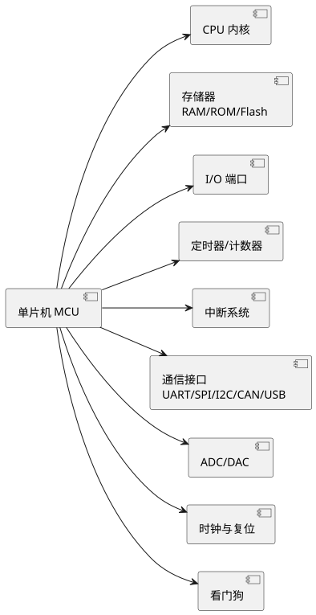

第 1 章 单片机概述
学习目标
- 理解单片机的定义、组成与特点
- 了解单片机的发展历程、现状与未来趋势
- 掌握单片机的主要应用领域
- 熟悉主流单片机系列（MCS-51、STC、STM32、MSP430、AVR、PIC、RISC-V）的定位与差异
- 明确本课程在应用型人才培养中的定位与学习方法
1.1 什么是单片机
单片微型计算机（Single-Chip Microcomputer），简称单片机，是将中央处理器（CPU）、存储器（RAM/ROM）、输入/输出接口（I/O）、定时器/计数器、时钟电路、中断系统等计算机核心部件集成在一块半导体芯片上的微型计算机。国际上也常称为 MCU（Microcontroller Unit，微控制器），强调其面向控制应用的定位。
与通用计算机（如 PC）相比，单片机具有以下特点：
| 对比项 | 通用计算机 | 单片机 |
|---|---|---|
| 形态 | 主板 + 外设，体积大 | 单芯片，体积小 |
| 功耗 | 数十至数百瓦 | 毫瓦至微瓦级 |
| 成本 | 数百元以上 | 几角至几十元 |
| 主频 | 数 GHz | 数 MHz 至数百 MHz |
| 用途 | 通用计算、数据处理 | 嵌入式控制、实时响应 |
| 操作系统 | Windows/Linux 等通用 OS | 裸机 / RTOS / 偶用 Linux |

查看 PlantUML 源码
@startuml
skinparam defaultFontName "Microsoft YaHei"
left to right direction
component "单片机 MCU" as A
component "CPU 内核" as B
component "存储器\nRAM/ROM/Flash" as C
component "I/O 端口" as D
component "定时器/计数器" as E
component "中断系统" as F
component "通信接口\nUART/SPI/I2C/CAN/USB" as G
component "ADC/DAC" as H
component "时钟与复位" as I
component "看门狗" as J
A --> B
A --> C
A --> D
A --> E
A --> F
A --> G
A --> H
A --> I
A --> J
@enduml单片机的核心价值在于"嵌入式控制"：它被"嵌入"到各种电子产品中，作为控制器负责采集传感器信号、运行控制算法、驱动执行机构、与人交互。从智能家电、工业自动化、汽车电子到物联网终端，单片机无处不在。
1.2 单片机发展历程与趋势
1.2.1 发展历程
单片机的发展大致可以分为以下几个阶段：
| 阶段 | 年代 | 代表产品 | 特征 |
|---|---|---|---|
| 探索期 | 1971-1976 | Intel 4004/4040 | 4 位，功能简单 |
| 低性能 8 位 | 1976-1980 | Intel 8048 | 8 位，无串口 |
| 高性能 8 位 | 1980-1990s | Intel MCS-51(8051)、Motorola 68HC05 | 完善 I/O、串口、定时器 |
| 16 位 | 1990s | Intel MCS-96、TI MSP430、PIC24 | 更高性能，部分带 ADC |
| 32 位 | 2000s 至今 | ARM Cortex-M 系列、RISC-V | 高性能、低功耗、丰富外设 |
其中，Intel 在 1980 年推出的 MCS-51（8051）是单片机史上的里程碑，其体系结构简洁、指令丰富、易于学习，至今仍是教学与低端控制的主流平台。STC 公司在 8051 内核基础上推出的 STC89C52RC、STC8H、STC32G 等系列，凭借"完全兼容 8051 + 大幅增强外设 + 极低价格"的策略，在国内市场占据重要地位。
进入 21 世纪，ARM 公司推出的 Cortex-M 内核系列（M0/M0+/M3/M4/M7/M23/M33/M55）成为 32 位单片机的主流。意法半导体（ST）的 STM32 系列、恩智浦（NXP）的 LPC 系列、Atmel/Microchip 的 SAM 系列、国产 GD/兆易创新等都基于 Cortex-M 内核，形成了庞大的 32 位单片机生态。
1.2.2 发展趋势
- 高性能化：主频从数十 MHz 提升到 GHz 级（如 STM32H7 主频 480 MHz），引入 DSP、FPU、硬件加密、AI 加速等。
- 低功耗化：工艺从 90nm 演进到 28nm 甚至更小，待机功耗低至 nA 级，适合电池供电与物联网场景。
- 无线集成化：单片机内置 BLE、Wi-Fi、LoRa、Sub-1G RF 等无线模块（如 ESP32、STM32WB）。
- 安全可信：内置硬件加密引擎、安全启动、TrustZone（如 Cortex-M33）、SE 单元。
- AI 端侧化：集成 NPU 或 AI 加速器，在端侧运行神经网络推理（如 STM32N6、K210）。
- 开源化：RISC-V 开源指令集架构崛起，国产单片机纷纷基于 RISC-V 推出产品（如沁恒 CH32V、乐鑫 ESP32-C3）。
- 工具链现代化：从单一 IDE 转向 VS Code + PlatformIO、CMake、CI/CD、AI 辅助开发等现代化工具链。
1.3 单片机应用领域
单片机几乎无处不在，主要应用领域包括：
| 领域 | 典型应用 | 常用平台 |
|---|---|---|
| 智能家电 | 电饭煲、洗衣机、空调、微波炉、扫地机器人 | STC、STM32、AVR |
| 工业控制 | PLC、变频器、伺服驱动、仪表、工业机器人 | STM32、TI C2000、瑞萨 |
| 汽车电子 | 发动机控制、ABS、车身控制、车载娱乐、ADAS | Infineon、NXP、瑞萨、STM32 |
| 消费电子 | 智能手表、无人机、电子玩具、蓝牙音箱 | STM32、ESP32、Nordic |
| 通信设备 | 路由器、调制解调器、物联网网关 | ARM9、Cortex-A、MIPS |
| 医疗仪器 | 血压计、血糖仪、心电监护、便携超声 | STM32、MSP430、Cortex-A |
| 物联网终端 | 智能家居、环境监测、智慧农业、资产追踪 | ESP32、STM32WL、MSP430 |
| 教学实验 | 嵌入式课程、电子设计竞赛、毕业设计 | STC、STM32、Arduino |
1.4 主流单片机系列对比
下表对比当前主流单片机系列的定位与特点，作为选型参考。
| 系列 | 厂商 | 内核 | 位宽 | 主频 | 定位 |
|---|---|---|---|---|---|
| MCS-51 | Intel（已停产，授权生产） | 8051 | 8 位 | 12-40 MHz | 经典教学平台，控制类应用 |
| STC89C52RC | STC（宏晶） | 8051 兼容 | 8 位 | 11.0592-35 MHz | 国内教学与低端控制主流 |
| STC8H / STC32G | STC | 8051 / RISC-V | 8/32 位 | 40 MHz+ | 增强型 8051，国产新势力 |
| AVR | Microchip（原 Atmel） | AVR | 8/32 位 | 16-48 MHz | Arduino 平台基础 |
| PIC | Microchip | PIC | 8/16/32 位 | 数 MHz-200 MHz | 工业控制、汽车电子 |
| STM32F0/F1/F4/F7/H7 | ST | Cortex-M0/M3/M4/M7 | 32 位 | 48-480 MHz | 通用 32 位单片机主流 |
| STM32L/G/WB/WL | ST | Cortex-M0+/M4/M33 | 32 位 | 32-160 MHz | 低功耗、无线、物联网 |
| MSP430 | TI | 16 位 RISC | 16 位 | 1-25 MHz | 超低功耗，电池供电 |
| ESP32 | 乐鑫 | Xtensa / RISC-V | 32 位 | 160-240 MHz | Wi-Fi/BLE 物联网终端 |
| GD32 | 兆易创新 | Cortex-M3/M4/M23/M33 | 32 位 | 108-550 MHz | 国产 STM32 替代 |
| RISC-V（CH32V/K210 等） | 沁恒、嘉楠等 | RISC-V | 32/64 位 | 数十 MHz-1 GHz | 开源生态、AI 端侧 |
1.5 应用型人才培养与课程定位
本课程面向应用型本科人才培养定位，区别于研究型大学的"重理论"和高职院校的"重操作"，应用型人才培养的核心是"理论够用 + 实践为重 + 工程导向"，强调学生能够将所学知识转化为解决实际工程问题的能力。
本课程的定位如下：
- 知识定位：以 MCS-51 体系结构为理论基础，以 STC 为 8 位入门平台，以 STM32 为 32 位进阶平台，建立从底层寄存器到上层库函数的完整知识体系。
- 能力定位：能够独立完成单片机应用系统的硬件连接、工程搭建、程序编写、烧录调试全流程；能够查阅数据手册、使用现代工具链、借助 AI 辅助工具提升开发效率。
- 素质定位：建立工程系统思维，培养严谨的工程态度、动手实践能力、持续学习新技术的意识。
- 就业定位：为嵌入式开发工程师、物联网应用工程师、电子产品研发工程师等岗位奠定基础。
本课程采用"按平台分篇递进"的编排：第 1 篇建立基础理论；第 2 篇以 STC 掌握 8 位单片机开发全流程（这是理解单片机底层原理的最佳入口）；第 3 篇以 STM32 进入 32 位现代单片机开发；第 4 篇简介 MSP430 低功耗单片机拓宽视野；第 5 篇通过综合项目将所学知识融会贯通。
1.6 学习方法与资源推荐
1.6.1 学习方法
- 动手为主，理论为辅：单片机是实践性极强的课程，每学一个知识点都应在硬件上验证。不要只看不练。
- 先会跑，再搞懂：先让示例代码跑起来看到效果，再回头理解每行代码的原理，建立正反馈。
- 读数据手册：芯片数据手册（Datasheet）和参考手册（Reference Manual）是权威文档，遇到不确定的细节要查手册而非搜索博客。
- 分模块学习：单片机外设是模块化的，GPIO、定时器、串口、ADC 各自独立，学一个用一个，不要贪多。
- 善用工具与 AI：Keil/CubeMX/PlatformIO/逻辑分析仪是基本工具；TRAE/Copilot 等 AI 工具能加速代码编写和 Bug 排查，但要培养判断 AI 输出正确性的能力。
- 记录与总结：写学习笔记、画原理框图、整理踩坑记录，形成自己的知识体系。
1.6.2 资源推荐
| 类型 | 资源 | 说明 |
|---|---|---|
| 数据手册 | STC89C52RC 手册、STM32F407 RM0090 | 权威参考，必查 |
| 教材 | 张毅刚《单片机原理及应用》 | 国内经典教材 |
| 视频 | 正点原子、野火 STM32 教程（B 站） | 系统性强，配套开发板 |
| 社区 | ST 官方论坛、电子工程世界 EEWorld、21IC | 问题交流 |
| 开源 | GitHub、OSChina、Gitee | 参考项目代码 |
| AI 工具 | TRAE、GitHub Copilot、ChatGPT | 辅助编码、答疑 |
| 仿真 | Proteus、Wokwi、Tinkercad | 无硬件仿真调试 |
| 本课程 | 本在线教程 + 配套代码工程 + 实验指导书 | 课程主资源 |
本章小结
- 单片机（MCU）是集成 CPU、存储器、I/O、定时器、中断系统等于一体的微型计算机，面向嵌入式控制应用。
- 单片机发展从 4 位到 32 位，MCS-51 是经典教学平台，Cortex-M 系列（含 STM32）是当前 32 位主流，RISC-V 是未来趋势。
- 应用领域覆盖家电、工业、汽车、消费、医疗、物联网等几乎所有电子产品。
- 主流系列包括 MCS-51/STC、STM32、MSP430、AVR/PIC、ESP32、RISC-V 等，选型应基于应用场景。
- 本课程面向应用型人才培养，采用 STC（8 位入门）→ STM32（32 位进阶）→ MSP430（简介）→ 综合项目的递进编排。
- 学习方法强调动手实践、读手册、分模块学习、善用工具与 AI。
思考题与习题
- 简述单片机与通用计算机的主要区别。
- 单片机内部通常包含哪些主要部件？分别起什么作用？
- 查阅资料，列出单片机在你身边 5 种电子产品中的应用。
- MCS-51 系列单片机是哪一年由哪家公司推出的？为什么至今仍在广泛使用？
- 对比 8 位单片机（如 STC）与 32 位单片机（如 STM32），各自适合什么场景？
- RISC-V 与 ARM Cortex-M 相比有哪些优势？为什么说它是未来趋势？
- 应用型人才培养的"理论够用、实践为重"如何体现在本课程的学习中？
- 上网查阅一份 STM32F407 的数据手册，列出它的主要参数（主频、Flash、RAM、外设）。
- 讨论：你认为 AI 辅助开发工具（如 TRAE、Copilot）会取代嵌入式工程师吗？为什么？
参考文献
- 张毅刚. 单片机原理及应用——C51 编程 + Proteus 仿真（第 4 版）[M]. 北京：高等教育出版社, 2021.
- STC 官方. STC89C52RC 数据手册 [Z]. 2024. https://www.stcmcudata.com/
- ST 官方. STM32F405/415/407/417 参考手册 RM0090 [Z]. 2024. https://www.st.com/
- Joseph Yiu. The Definitive Guide to ARM Cortex-M3 and Cortex-M4 Processors (3rd Edition) [M]. Newnes, 2013.
- 何立民. 单片机高级教程——应用与设计（第 3 版）[M]. 北京：北京航空航天大学出版社, 2018.
- 郭天祥. 新概念 51 单片机 C 语言教程 [M]. 北京：电子工业出版社, 2018.
- ARM 官方. Cortex-M4 Technical Reference Manual [Z]. 2024. https://developer.arm.com/
- RISC-V International. RISC-V Instruction Set Manual [Z]. 2024. https://riscv.org/